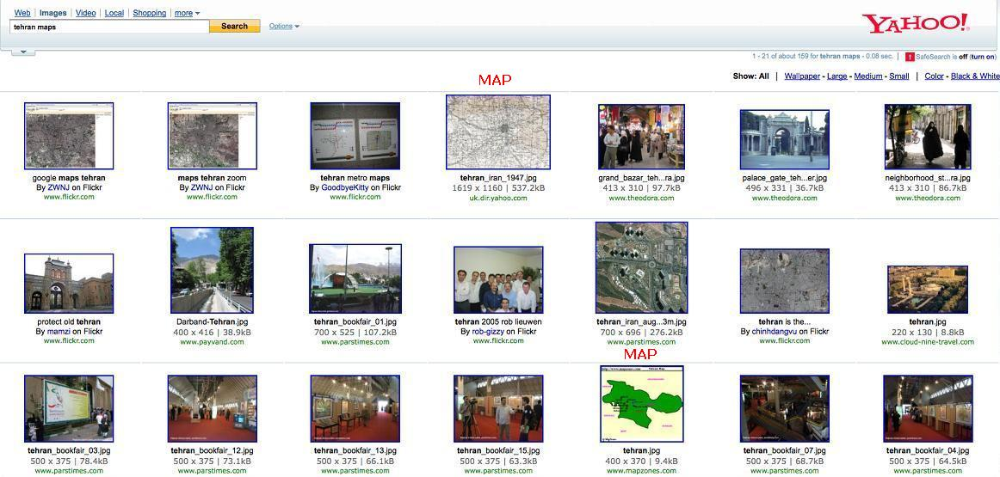
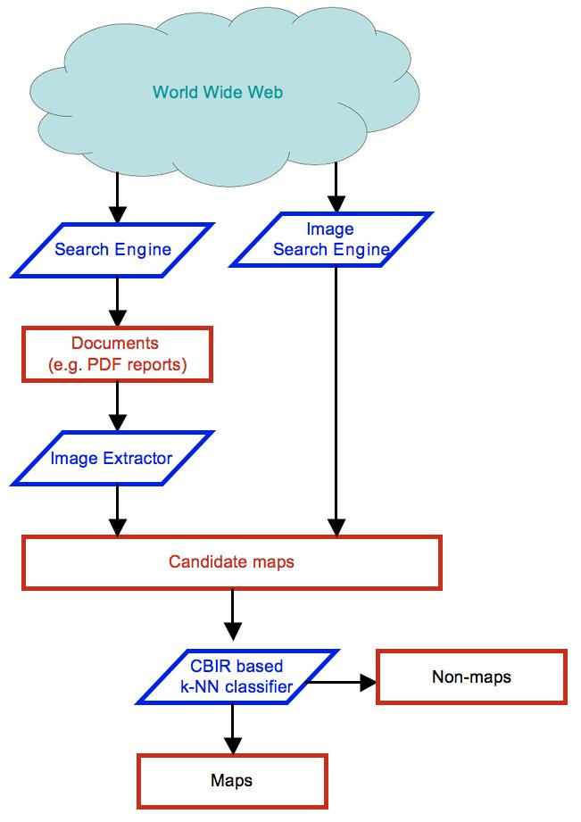
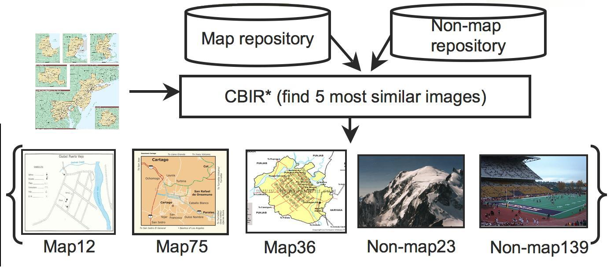
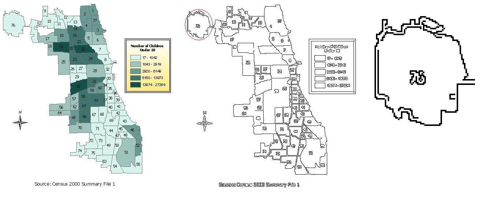

| Map Discovery | |||
| There are a huge number of high quality maps on the Internet that can be used to extract useful geospatial information about the region they describe. For example, by aligning satellite images with these maps, as shown in Figure 1, we can label the streets automatically. This procedure is even more useful for areas such as the Middle East, where we do not have detailed road vector data but there do exist maps for large parts of it. | |||
 Figure 1: This figure shows a map of Washington D.C. conflated with its satellite imagery |
|||
| But identifying these high quality maps from among the huge number of images that exist on the Internet is a difficult task. First, there is no meta-data to directly identify these maps. This makes it necessary to look at the content of the images to distinguish between the maps and other images. Second, many such high quality maps are embedded in other documents such as PDF reports, PowerPoint presentations, etc. Therefore, we have to analyze these documents as well to obtain those high quality maps. | |||
| Simply using Web-based image search engines does not solve the problem, as is evident from the snapshot of results page on Yahoo Image Search shown in Figure 2. For the query term 'Tehran maps', the first page returns only two maps among the top 21 matching images. This happens because image search engines only use the textual information surrounding the image, such as its name, title of the page it is displayed on, etc. to identify them. | |||
|  Figure 2: A snapshot of search results on Yahoo Image Search |
|||
| Approach | |||
| We solve both the above mentioned problems through our approach described here. Figure 3 depicts the architecture of our system. We start by collecting images and documents of an area from the Internet. Then, we parse the documents to extract the images embedded in them. Having collected the candidate maps, we use a Content Based Image Retreival (CBIR) technique to classify each image as a map or nonmap based on a new set of features extracted from it. | |||
|  Figure 3: The architecture of our MapFinder system |
|||
| Content Based Image Retreival | |||
| Maps come in wide varieties and the graphical characteristics of each type of map varies significantly from the other types. In order to identify all kinds of maps accurately, we use a Content Based Image Retrieval technique to match each query image with a pre-labeled repository of images, and then classify it based on the most similar images found. Figure 4 shows how we find the most similar images using the CBIR technique. Given a new query image, the CBIR system matches it with all the images in the map and nonmap repository and then finds the most similar images. | |||
|  Figure 4: The architecture of our MapFinder system |
|||
| Features | |||
| In order to compare images using the CBIR technique, we have introduced a new set of features that we believe are much more effective in capturing the characteristics of maps. These features operate on the individual edge sections in the Canny edge map of the original image. Figure 5 shows a sample map in color, its Canny edge map and an enlarged sub part to show the individual edge sections. We extract properties of each edge section such as its length, the number of branches in it, etc. Then, we find aggregate features for the entire image from these properties. | |||
|  Figure 5: A sample map, its Canny edge map and a sub part enlarged to show disjoint edge sections |
|||